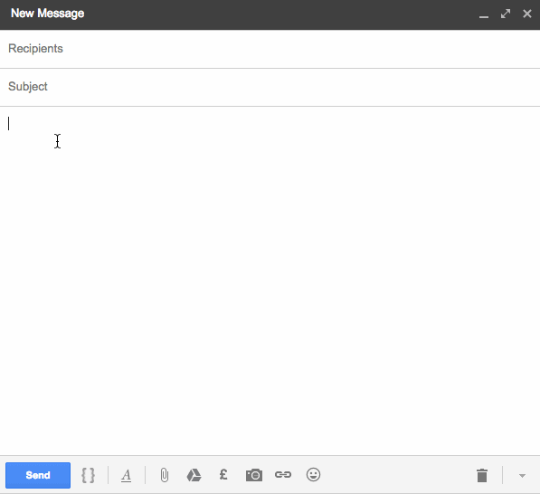

Enjoy the flexibility of manually written emails,
with the speed of using pre-written templates.
(Once you've purchased the Chrome Extension, Snippets will be available to you in Gmail)
Whether you’re writing sales emails, providing customer support or hustling to get your business off the ground, sending a lot of email is usually a necessary evil.
And, of course, you want to write the best emails you can, which takes time.
Inevitably, you find yourself returning to your favourite phrases, common responses and predefined blocks of text as part of those emails.
It could be...
Whichever it is, these snippets of text are key to consistently communicating the correct information.
---
As you turn to these trusted word combos throughout the day, the frustration of typing the same sentence, phrase or paragraph over and over in your emails begins to grow.
So you go looking for shortcuts and solutions.
Just think - how many times do you find yourself...
Of course, none of these tasks mean the end of the world.
We generally see them as small inconveniences, which bug us in the moment, but which we quickly move on from and forget about.
But...
...these little moments mount up. And build. And compound.
Until very quickly, if left unchecked, they become either;
---
Realistically, none of us are going to escape the daily email grind any time soon.
But wouldn’t it be amazing if we could make it a lot less tedious and repetitive?
And not only that, imagine getting through your follow up list of prospects or that inbox full of customer requests in half the time you normally do.
Wouldn’t that be something?!
Well, this is exactly why we built Snippets for Gmail…
To reduce the time and effort you spend on repeating yourself over and over again in your emails!
To give you back your time (and sanity), without sacrificing the quality of your emails, or sounding like a template-happy robot.
Sounds ace. How do I start using it?
We're currently doing some private Beta testing to ensure that Snippets for Gmail delivers all the value we believe it can.
If you'd like free, early access to try out the app, just request access via the button below, and once approved, we'll send you a link to download the 'Snippets for Gmail' Chrome extension.
How do I use it?
Create great emails at speed in 3 simple steps...
Step 1
Once you've installed the Snippets for Gmail Chrome extension, open up your Gmail inbox. You should see the 'Snippets' link in the top right of your inbox screen.
Clicking on this will open your snippets library.
Step 2
Create and save all of your greatest hits — favourite phrases, commonly used sentences and paragraphs, official blurbs and statistics - building up your ‘back catalogue’ of copy.
Each ‘snippet’ you create consists of a Name, Content (the text to be inserted) and a Keyword to trigger the snippet.
Step 3
At any point whilst you're writing an email, simply use the /keyword command to find and insert the relevant snippet into your email by typing a /
You can either search your snippets by typing the keyword or you can scroll with your cursor keys, track pad or mouse. Press enter or click to select and insert the highlighted snippet.
And there you have it - the core elements of most of your emails created in seconds, with just a few simple /commands
---
FAQs
Who is Snippets best for?
In short, anyone who writes lots of emails! But in particular, if you have a role which requires you to send lots of similar or repetitive emails, you'll save lots of time with snippets. Common use cases include people working in sales or customer support roles.
Where can I use Snippets?
Snippets is a Google Chrome extension which allows you to use snippets within Gmail and Inbox by Gmail. If you'd like to use it somewhere else, please let us know here.
I already regularly use email templates. Are snippets better?
It depends on the specific use case, and there is no reason you can't use both, but if you already regularly use email templates, you'll find snippets to be a natural, more flexible progression. Templates can be a bit robotic once you get into a proper email exchange and require lots of editing.
How many snippets can I create?
There is no limit to the number of snippets you can create.
Can I change the command to insert a snippet?
Yes. By default, snippets are triggered with a / but this can be changed to any key.
Can snippets contain rich text (links, formatting etc.)?
Yes. Snippets can contain anything you could put into an email manually - links, bullets, images etc. And there is no limit to how long they are.
Is there a free version?
Afraid not. We've tried to make Snippets really affordable at just $14.99 (a one-off payment which you'll make back in saved time within a week), but want to continue to improve it and support it properly, which costs money.